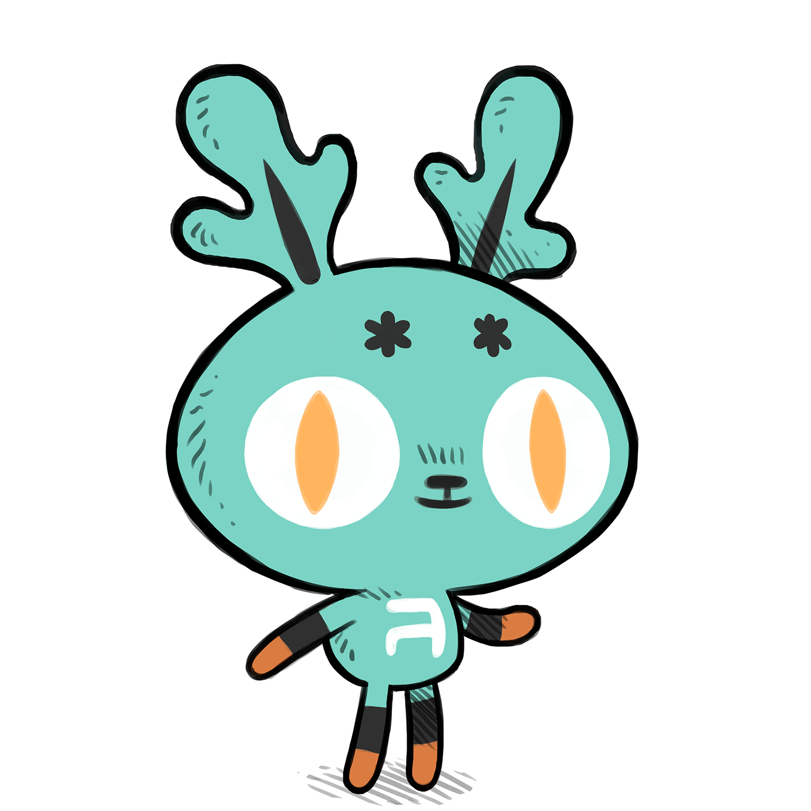
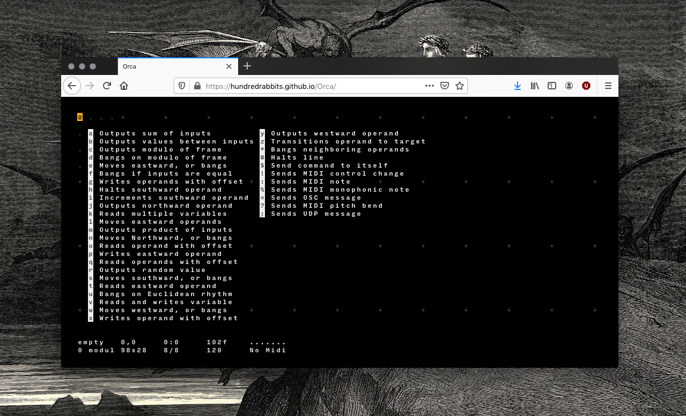

orca
introduction

Orca is an esoteric programming language, designed to create procedural sequencers in which each letter of the alphabet is an operation, where lowercase letters operate on bang, uppercase letters operate each frame.
The application is not a synthesizer, but a flexible livecoding environment capable of sending MIDI, OSC & UDP to your audio interface, like Ableton, Renoise, VCV Rack or SuperCollider. You can also use Pilot, a companion application to ORCA.
Marabu, Orca's predecessor was created while in French Polynesia in 2017. Orca came into being in 2018-2019, its production spanning over 3 countries: Fiji, The Marshall Islands and Japan.
sustainability
We build ours tools to be lightweight in order to reduce our energy use, also to lessen our dependence on closed-source applications we can't repair ourselves. If you are in a similar situtation, we recommend that you use the C99 version of Orca.
Read more about our design philosophy
orbit
Meet Orbit, the mascot for Orca. Orbit is there to talk about updates relating to Orca.
download
web version
It is now possible to use Orca in your browser, without the need to install it as an application.
We decided to build a browser compatible version in response to Apple moving toward requiring all applications to be notarized, you can learn more about how this issue will impact small developers here. While we no longer support the OSX platform, our web version will allow Orca users still using Apple products to run Orca in their browser.
Use Orca Livedonations
Because Orca Live isn't available through a client, it is harder to receive donations. Donations mean we can spend time improving this tool, and offering support when needed.
Support the development of Orca via Patreon or LiberaPay.
To learn more:
- Look at projects created with #ORCΛ
- Watch the introduction video
- Check out examples
- Follow the tutorials
If you need some help:
If you're looking for a portable distribution, visit Orca-c. If you're looking for the library for your Monome Norns, visit Orca Norns.

workshops

(Workshop in Kobe, Japan. 30.11.19. Photo by Kousei Ikeda )
If you want to organize an ORCΛ workshop in your area, let us know and we'll be happy to share it.
Keep an eye out for upcoming workshop dates
visual
You can change the look and colour of Orca.
To do this, download themes. You can view the colour palettes of each theme in the preview, once you find something you like, drag the file(.svg file) onto Orca. The colours will change instantly.
These themes are part of the Ecosystem Theme, which means that you can apply a theme to any supported app (Left, Donsol, Dotgrid and Ronin).
You can also create your own themes.
extras
This application supports the Ecosystem Theme. See the License file for license rights and limitations (MIT). Pull Requests are welcome, but please read our design philosophy first.